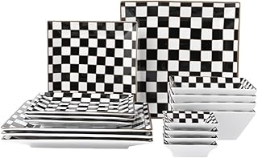

The design philosophy behind the Whimsical Checkered Charm Tiered Tray is a delightful blend of classic charm and contemporary flair. Its defining feature, the crisp checkered pattern, evokes a sense of nostalgic comfort while remaining undeniably stylish. This graphic motif introduces a dynamic visual interest without overwhelming the space, making it a versatile piece that complements a range of interior aesthetics, from a minimalist Scandinavian kitchen seeking a touch of warmth to a more eclectic space embracing playful accents. The two-tier structure itself is thoughtfully proportioned, creating an elegant vertical dimension that draws the eye upward, celebrating the items it holds rather than merely storing them. The 'whimsical' aspect is subtle, manifested in the cheerful yet refined pattern, proving that practicality can indeed be beautiful.
Beyond its visual appeal, the true merit of any functional home accessory lies in its real-world utility and construction. The Whimsical Checkered Charm Tiered Tray, while aesthetically engaging, does not compromise on practicality. Crafted from what appears to be a durable wood composite with a smooth, lacquered finish, it offers a sturdy foundation for its intended purpose. The two tiers are securely joined, ensuring stability even when fully laden with jars of spices or a collection of artisanal sweeteners. Its dimensions are judiciously selected, providing ample capacity for essentials without monopolizing precious counter space. Cleaning is straightforward, requiring only a damp cloth to maintain its pristine appearance. This piece transforms disarray into an artful presentation, proving its value as both a decorative accent and a diligent organizer.
This enchanting two-tier stand thoughtfully organizes everyday essentials, transforming practical items into a charming vertical display. Its delightful checkered design infuses any kitchen or coffee bar with a refined sense of playful elegance.
View Current Price| Material | Durable Wood Composite with Lacquer Finish |
| Key Feature | Two-Tier Vertical Display |
| Aesthetic Style | Playful Modern Classic |